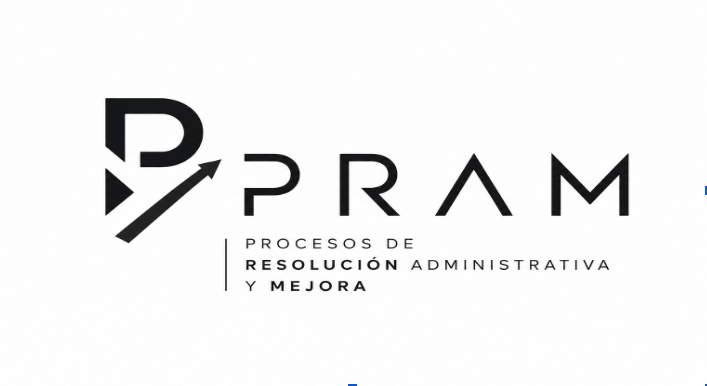

FERIA TP UNA IDEA CON PROPÓSITO
Bienvenidos
a PRAM.
Las grandes experiencias empiezan con algo simple: escuchar. Descubre cómo convertimos cada atención en una oportunidad para mejorar.
Entrar a PRAM Hecho para las pymes. Pensado en las personas.
EL CLIENTE EN EL CENTRO

Lo que escuchamos
se convierte en mejora.
01 Escuchar02 Resolver03 Mejorar
PROCESOS DE RESOLUCIÓN ADMINISTRATIVA Y MEJORAConoce lo que nos mueve